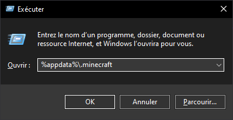
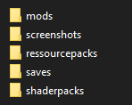
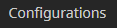
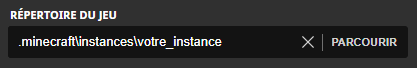
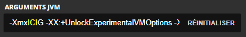

Création d'une instance de mods Minecraft
Pour commencer, faites + R sur votre clavier et tapez %appdata%\.minecraft

Créez un dosier Instances ou utilisez un déjà présent dans le dossier
Créez un dossier du nom que vous voulez
Puis créez plusieurs dossiers tel que mods (Si vous jouez avec des mods), ressourcepacks, etc...

Mettez dans ces dossiers, vos mods, ressourcepacks, mapsn shaders, etc...
Vous pouvez aussi mettre vos fichiers d'options, de serveurs, etc...
Mise en place de l'instance dans le launcher
Pour commencer, lancez votre launcher Minecraft et allez dans l'onglet Configurations

Cliquez ensuite sur Nouveau
Remplacez le répertoire du jeu par celui créer plus tôt

Mettez plus de RAM dans les Arguments JVM si souhaité

Sauvegardez puis lancez votre jeu et tout devrait maintenant fonctionner
Retour à l'accueil